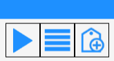
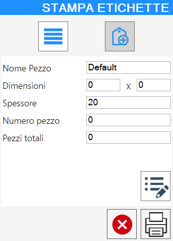
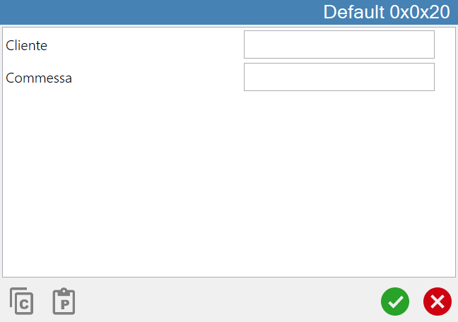
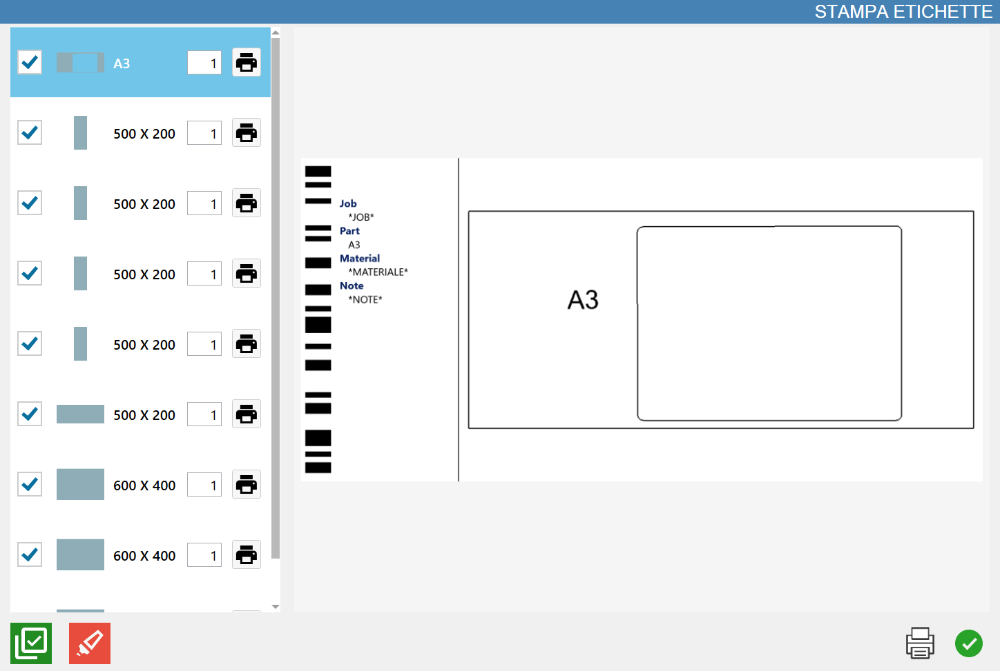

This functionality allows the operator to generate labels on the piece before pressing the PGM button.
/6.4_b-20250827-084629.png)
Buttons
Inside the lower bar of the Parametrix main screen, there is the button to access the Book Match functionality.
/StampaOffOn-20250827-072235.png) | Labeling |
|---|
There exist two distinct labeling modes, illustrated below.
Basic Labeling Mode
The base mode puts at disposal of the operator three possible modes of labeling in its panel.

/2.1_OffOn-20250827-072957.png) | Labeling in the working area |
/2.2_Off-20250827-073135.png) | Labeling from the piece list |
/2.3_Off-20250827-073207.png) | Labeling with manual insertion of information |
Labeling in the working area
The selection of at least a piece in the visible preview on screen and the subsequent pressing of this button triggers the following warning:
/2.1.1-20250827-080436.png)
Labeling from the pieces list
This mode allows to select the pieces for which you want to apply the label printing.
Will be opened a small panel similar to that represented below:
/4.2-20250827-080840.png)
/StampaOff-20250826-150011.webp) | Print labels |
Labeling with manual information insertion
This mode allows to manage the information of the labels and their additional properties.
Will be opened a small panel similar to that represented below:

/z9-20250827-115244.png) | Additional properties |
|---|
Additional properties print labels
Based on the additional properties properly set, it is possible to manage the additional properties in the following panel.

The following buttons allow the operator to quickly manage additional properties:
Copy additional properties | |
/5.4.2_b-20250827-082505.png) | Paste additional properties |
Advanced Labeling mode
This mode, as for the previous one makes available buttons to execute Labeling in the working area and Labeling from piece list.
/3.0-20250826-150132.webp)
In the list of pieces visible on the left is reported a single occurrence for each piece.
In the remaining part of the window instead is visible a preview of the label currently selected.
/6.7-20250827-111816.png)
In the bottom part of this panel are put at disposal of the operator the following buttons:
Activate/Deactivate multiple selection | |
Select all list elements |
Print labels in Open state
Once the PGM is generated, it is possible to proceed with printing the corresponding labels by accessing the 'Open Status' section, located in the lower right of the window. In this phase, the measurements are added automatically to the drawing.
/6.4_d-20250827-085035.png)
Pressing the 'Print labels' button, the following panel will be displayed that allows to select the labels that you want to print.
On the left side of the panel are reported all pieces present in the selected state, even if repeated.
In the remaining part of the window is visible a preview of the label currently selected.
It is suggested to use a label format of adequate size (for example, 20 cm x 10 cm) to guarantee a correct readability of the quoted drawing.
